🌿 1. Tổng Quan Về Thiên Đường Đảo Ngọc Phú Quốc
Tọa lạc trong vùng biển Tây Nam thuộc vịnh Thái Lan, Phú Quốc là hòn đảo lớn nhất của Việt Nam với diện tích tự nhiên 589,27 km² (tương đương quốc đảo Singapore). Nơi đây được thiên nhiên ưu ái ban tặng danh xưng mỹ miều "Đảo Ngọc" nhờ sở hữu đường bờ biển dài hơn 150km với những bãi cát trắng mịn như kem tuyết, thảm rừng nhiệt đới nguyên sinh bạt ngàn và thế giới sinh thái biển trù phú bậc nhất phương Nam.
Đặc biệt, từ tháng 10 đến tháng 4 hàng năm, khi miền Bắc chìm trong gió mùa đông lạnh, Phú Quốc bước vào Mùa Khô Vàng — thời điểm biển lặng như gương, nắng chan hòa rực rỡ và những buổi hoàng hôn ngũ sắc huyền diệu níu chân hàng triệu du khách quốc tế và nội địa.
🏛️ 2. Vị Trí Địa Lý & Dấu Ấn Lịch Sử Đảo Ngọc
📜 Cơ sở dữ liệu pháp lý & Quyết định xếp hạng của Nhà nước Việt Nam:
- Thành phố đảo đầu tiên của Việt Nam: Thành lập theo Nghị quyết số 899/NQ-UBTVQH14 ngày 09/12/2020 của Ủy ban Thường vụ Quốc hội (có hiệu lực từ ngày 01/01/2021), gồm 2 phường (Dương Đông, An Thới) và 7 xã (Bãi Thơm, Cửa Cạn, Cửa Dương, Dương Tơ, Gành Dầu, Hàm Ninh, Thổ Châu).
- Di tích lịch sử Quốc gia đặc biệt: Trại giam Tù binh Chiến tranh Phú Quốc (Nhà tù Cây Dừa) được Thủ tướng Chính phủ xếp hạng Di tích quốc gia đặc biệt theo Quyết định số 2408/QĐ-TTg ngày 23/12/2014.
- Khu Dự trữ Sinh quyển Thế giới: Vườn Quốc gia Phú Quốc (diện tích trên 31.400 ha) được UNESCO MAB chính thức công nhận là vùng lõi của Khu Dự trữ Sinh quyển Thế giới Kiên Giang vào ngày 27/10/2006.
- Di sản văn hóa phi vật thể Quốc gia & Bảo hộ EU: Nghề làm nước mắm truyền thống Phú Quốc được Bộ Văn hóa, Thể thao và Du lịch ghi danh là Di sản văn hóa phi vật thể quốc gia theo Quyết định số 1407/QĐ-BVHTTDL ngày 27/5/2021 và là sản phẩm đầu tiên của Việt Nam được Liên minh Châu Âu (EU) cấp chứng nhận Bảo hộ Chỉ dẫn Địa lý (PGI) từ năm 2012.
Về mặt địa mạo, đảo Phú Quốc có hình dạng giống như một con cá đuôi xòe đang bơi về phương Bắc, với chiều dài Bắc - Nam khoảng 50km và chiều rộng nơi phình to nhất khoảng 27km. Quần đảo Phú Quốc gồm đảo lớn Phú Quốc cùng 21 hòn đảo nhỏ thuộc quần đảo An Thới ở phía Nam và quần đảo Thổ Chu ở phía Tây Nam, tạo nên phên dậu tiền tiêu vững chắc bảo vệ chủ quyền biển đảo thiêng liêng của Tổ quốc.
📜 3. Huyền Thoại & Truyền Tích Dân Gian Đảo Ngọc
Nằm nơi đầu sóng ngọn gió biên cương phía Tây Nam, Phú Quốc là chứng nhân lịch sử của nhiều biến động hào hùng và những truyền tích kỳ bí truyền đời:
👑 Dấu Tích Bôn Tẩu Của Chúa Nguyễn Ánh & Huyền Tích Giếng Tiên
Vào cuối thế kỷ XVIII, trong những năm tháng lánh nạn quân Tây Sơn truy đuổi, Chúa Nguyễn Ánh (sau này là Vua Gia Long sáng lập triều Nguyễn) đã nhiều lần cùng tàn quân chạy ra đảo Phú Quốc. Khi trú chân tại mũi cực Nam của đảo (nay là Mũi Ông Đội), đoàn quân lâm vào cảnh cùng cực kiệt quệ: lương thực cạn kiệt, xung quanh bốn bề là nước biển mặn chát, binh lính khát cháy cổ họng.
Trong lúc tuyệt vọng, Chúa Nguyễn Ánh đã rút thanh gươm báu cắm sâu vào tảng đá hoa cương ven biển, ngửa mặt lên trời khấn nguyện: "Nếu trời cho ta làm vua thì hãy ban cho quân sĩ nguồn nước ngọt cứu mạng!". Vừa dứt lời, khi ngài rút lưỡi gươm lên thì một mạch nước ngọt trong vắt, mát lịm kỳ diệu từ lòng đá ngầm phun trào xối xả. Kỳ lạ thay, mạch nước này nằm ngay sát mép sóng biển mặn nhưng suốt hàng trăm năm qua con nước thủy triều lên xuống chưa bao giờ làm nước bị nhiễm mặn và giếng cũng không bao giờ cạn nước. Người dân đời sau gọi nơi đây là Giếng Tiên (hay Giếng Ngự) và lập miếu thờ tưởng nhớ dấu chân mở cõi phương Nam.
🌊 Huyền Tích Dinh Cậu — Ngọn Hải Đăng Tâm Linh Của Ngư Phủ
Truyền thuyết dân gian xứ đảo kể lại, vào khoảng thế kỷ XVII, khi những lưu dân người Việt đầu tiên dong thuyền ra đảo Phú Quốc khai hoang lập ấp, nghề biển đối mặt vô vàn nguy hiểm bởi những cơn bão biển bất ngờ cuộn sóng dìm đắm tàu bè. Một ngày nọ, một chiếc thuyền đánh cá gặp bão dữ trôi dạt nhiều ngày giữa biển khơi mù mịt, cận kề cái chết.
Trong lúc tuyệt vọng khấn cầu trời đất phù hộ, bỗng nhiên ngư dân nhìn thấy một mỏm đá nhô cao sừng sững nơi cửa biển với ánh sáng huyền ảo dẫn đường. Thuyền nương theo ánh sáng rẽ sóng vào bờ thoát nạn kỳ diệu. Cho rằng mỏm đá có linh khí trời ban che chở, dân làng cùng nhau góp công lập nên ngôi miếu thờ gọi là Dinh Cậu. Kể từ đó, trước mỗi chuyến ra khơi bám biển dài ngày hay mỗi dịp lễ hội âm lịch, bà con làng chài đều tề tựu về dâng hương khấn vái cầu xin sóng yên biển lặng, tôm cá đầy khoang.
🌸 4. Chuỗi Hình Ảnh 4 Mùa Du Lịch Phú Quốc
Khác biệt với đất liền, thiên nhiên Phú Quốc phân định thành hai mùa rõ nét cùng những chu kỳ sinh thái đặc hữu tạo nên vẻ đẹp riêng biệt theo từng thời điểm trong năm:
🌊 Mùa Khô Biển Êm — Thời Điểm Vàng Du Lịch Đảo Ngọc
Khi gió mùa Đông Bắc tràn về, Phú Quốc bước vào khoảng thời gian thiên nhiên hoàn mỹ nhất. Mặt biển phẳng lặng như gương soi, nước biển trong vắt nhìn thấu tận đáy san hô ở độ sâu 5–7 mét, bầu trời xanh ngắt và nắng vàng ấm áp. Đây là lúc lý tưởng nhất cho các tour cano 4 đảo, lặn ngắm san hô bằng ống thở (snorkeling) và lặn bình khí (scuba diving).
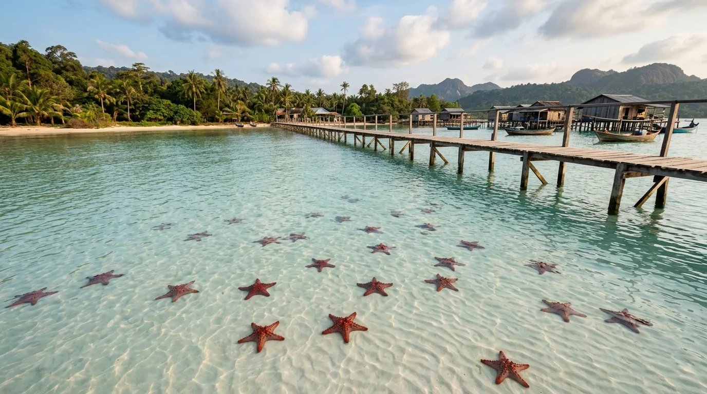
Tháng 12 – Tháng 4⭐ Mùa Sao Biển Đỏ Rạch Vẹm — Bức Tranh Thiên Nhiên Cổ Tích
Vào những tháng mùa khô, vùng biển Bắc đảo tại làng chài Rạch Vẹm và Mũi Hàm Rồng trở nên tĩnh lặng tuyệt đối. Hàng trăm chú sao biển đỏ rực dạt vào bãi cát trắng nông chỉ ngập ngang mắt cá chân, lấp lánh dưới làn nước trong suốt như hồ thủy tinh. Du khách có thể thỏa sức ngắm nhìn và chụp những bức hình kỷ niệm tuyệt mỹ.
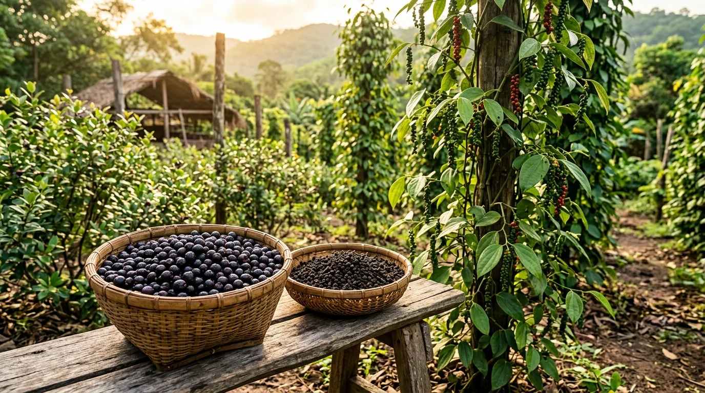
Tháng 1 – Tháng 3🌿 Mùa Thu Hoạch Hồ Tiêu & Rộ Trái Sim Rừng
Mùa xuân trên đảo là thời điểm các vườn tiêu Suối Đá, Khu Tượng chín đỏ chùm, người nông dân rộn ràng bắc thang hái tiêu sọ, tiêu chín hảo hạng thơm lừng. Cùng lúc đó, sườn đồi rừng nguyên sinh tím biếc mùa hoa sim kết trái, những mẻ rượu sim rừng truyền thống lên men thơm ngào ngạt khắp các cơ sở chưng cất trứ danh.
🌅 Mùa Hoàng Hôn Ngũ Sắc — Khoảnh Khắc Ma Mị Nơi Chân Trời
Thời khắc giao mùa cuối năm mang đến những chiều hoàng hôn ngoạn mục nhất Phú Quốc. Bầu trời Bãi Trường, Dinh Cậu chuyển biến kỳ diệu từ vàng mật sang hồng phấn, đỏ tía rồi tím thẫm hòa quyện cùng sóng biển rực rỡ, tạo nên khung cảnh lãng mạn vô song làm say đắm mọi trái tim lữ hành.
📸 5. Top 10 Thắng Cảnh Biểu Tượng & Dấu Tích Lịch Sử
Khám phá 10 điểm đến không thể bỏ lỡ đại diện cho thiên nhiên, văn hóa và lịch sử hào hùng của xứ đảo:
1. Bãi Sao (Phường An Thới) — Dải Lụa Cát Trắng Như Kem Tuyết
Bãi biển biểu tượng số 1 với bãi cát trắng muốt như phấn thoai thoải vươn dài, hàng dừa nghiêng bóng thơ mộng và làn nước ấm áp phẳng lặng như gương soi quanh năm.
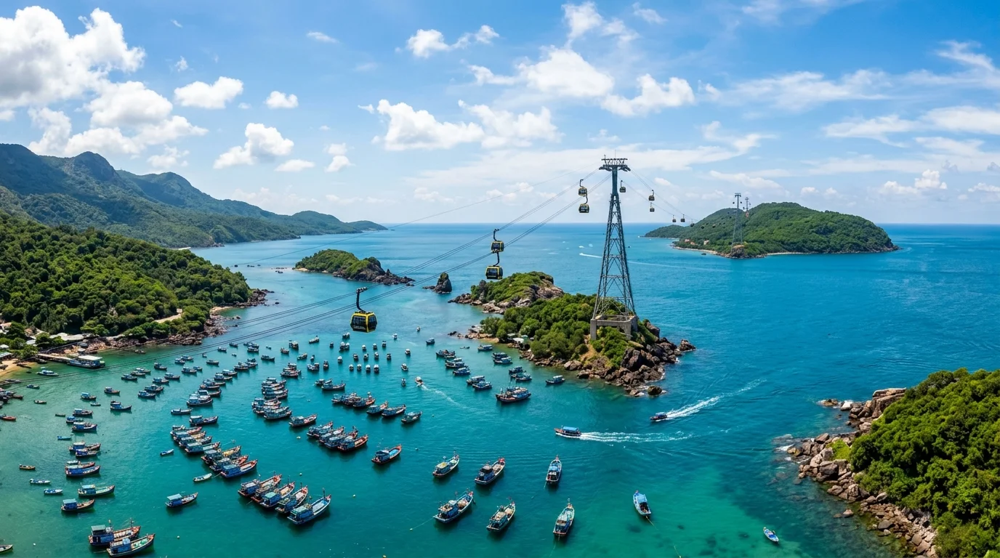
Kỷ lục Guinness2. Cáp Treo Hòn Thơm
Tuyến cáp treo vượt biển 7.899,9m dài nhất thế giới ngắm trọn quần đảo An Thới xanh ngắt từ trên cao.
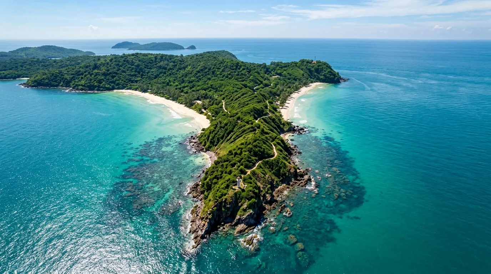
Top 50 Bãi biển đẹp nhất3. Bãi Khem & Mũi Ông Đội
Bãi biển hình cánh cung tĩnh lặng với cát trắng hình quạt và dải Mũi Ông Đội ngắm trọn cả bình minh lẫn hoàng hôn.
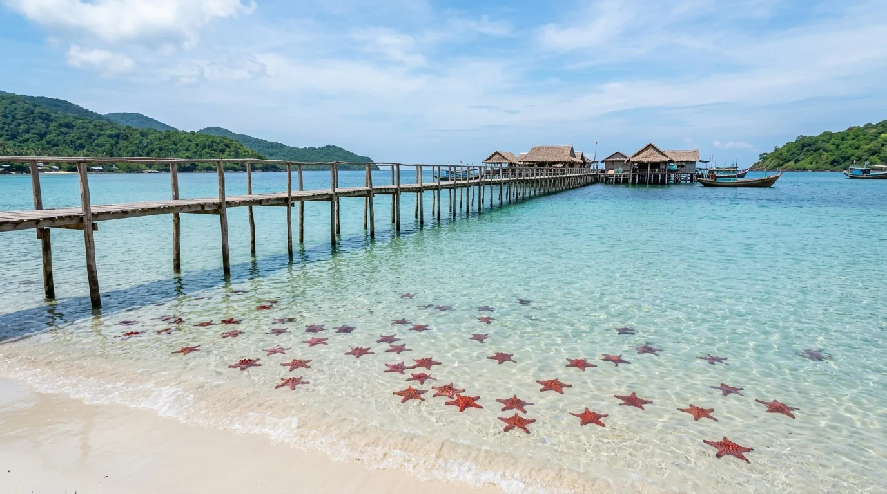
Vương quốc sao biển4. Làng Chài Rạch Vẹm — Vương Quốc Sao Biển Đỏ & Bờ Cát Hoang Sơ Bắc Đảo
Bản làng chài hoang sơ nơi hàng ngàn chú sao biển đỏ tự nhiên quần tụ bên bờ cát thoai thoải và những cây cầu gỗ mộc mạc vươn dài ra làn nước biển trong vắt nhìn thấu tận đáy cát.
5. Sunset Sanato & Bãi Trường
Tọa độ ngắm hoàng hôn ngũ sắc ngoạn mục nhất Phú Quốc với các tác phẩm nghệ thuật voi bay siêu thực giữa biển khơi.
6. Dinh Cậu & Dinh Bà
Ngôi miếu cổ linh thiêng ngự trên ghềnh đá rêu phong cheo leo sóng vỗ, ngọn hải đăng tâm linh chở che ngư phủ bao đời.
7. Làng Chài Cổ Hàm Ninh — Cầu Gỗ Đón Bình Minh & Trầm Tích Ngư Phủ Trăm Năm
Ngôi làng chài cổ xưa nhất đảo ngọc nằm nép mình dưới chân dãy núi Hàm Ninh. Cầu gỗ rêu phong vươn dài ra biển trong sớm mai rực rỡ, những nếp nhà bè mộc mạc và ghe thuyền câu mực vẽ nên bức tranh bình yên đậm đà hồn biển đảo.
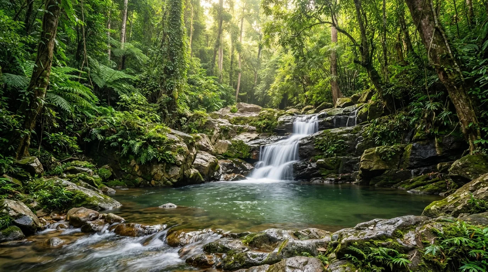
UNESCO Sinh quyển8. Vườn Quốc Gia & Suối Tranh
Lá phổi xanh nguyên sinh của đảo ngọc với hơn 31.000 ha rừng già nhiệt đới, dòng thác suối Tranh trong vắt len lỏi qua ghềnh đá hoa cương.
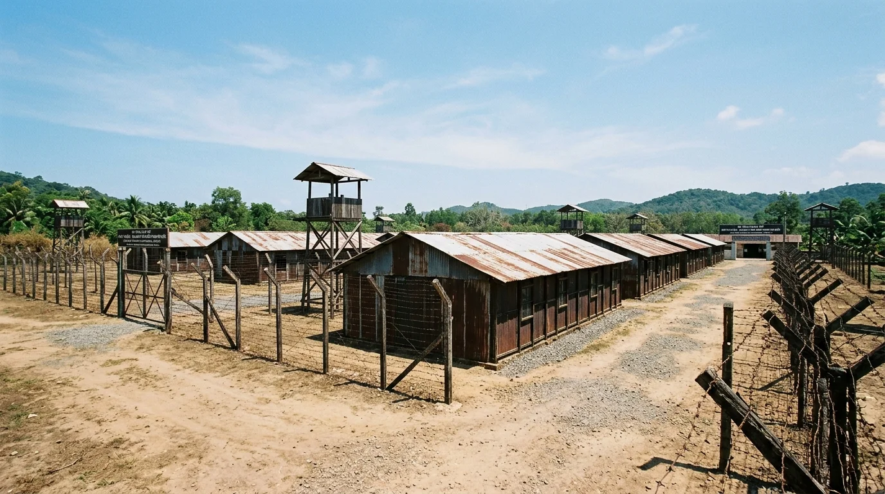
Di tích Quốc gia Đặc biệt9. Di Tích Nhà Tù Phú Quốc
Địa chỉ đỏ lịch sử thiêng liêng minh chứng cho ý chí kiên cường, bất khuất của các chiến sĩ cách mạng kiên trung vì độc lập dân tộc.
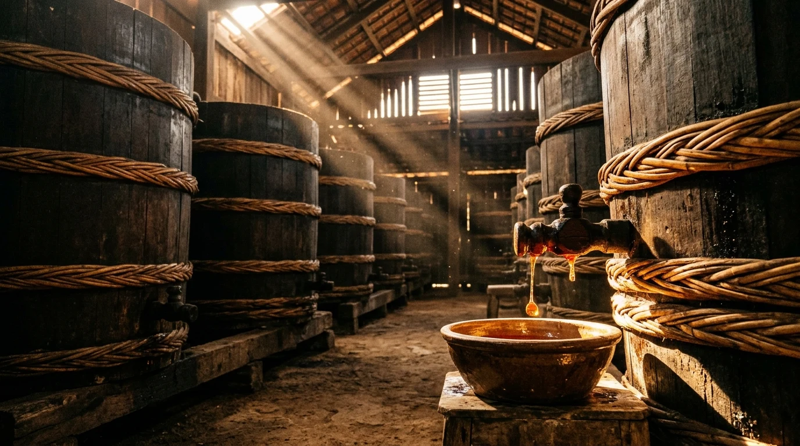
Di sản Quốc gia & OCOP 5 sao10. Nhà Thùng Nước Mắm Truyền Thống — Di Sản Văn Hóa Phi Vật Thể Quốc Gia
Nghề làm nước mắm truyền thống trăm năm nổi tiếng toàn cầu, sử dụng cá cơm than tươi ủ chượp trong thùng gỗ bời lời khổng lồ niềng dây song mây, chiết xuất ra từng giọt mắm nhĩ màu cánh gián hổ phách đậm đà 40-43 độ đạm.
🚗 6. Cẩm Nang Di Chuyển Đến Phú Quốc & Cung Đường Giao Thông
Phú Quốc sở hữu cảng hàng không quốc tế và hệ thống cảng biển nước sâu hiện đại, kết nối vô cùng thuận tiện:
1. Đường Hàng Không (Nhanh chóng & Thuận tiện nhất)
- Từ Hà Nội: Vietnam Airlines, Vietjet Air, Bamboo Airways khai thác chuyến bay thẳng hàng ngày đến sân bay quốc tế Phú Quốc (PQC). Thời gian bay khoảng 2 giờ 10 phút.
- Từ TP. Hồ Chí Minh: Chuyến bay thẳng chỉ mất khoảng 55 – 60 phút, tần suất hơn 20 chuyến/ngày từ sáng sớm đến đêm khuya.
- Từ Hải Phòng, Đà Nẵng, Cần Thơ: Các chặng bay thẳng khứ hồi đều đặn 3–5 chuyến/tuần.
2. Đường Thủy (Tàu cao tốc từ đất liền)
- Tuyến Rạch Giá → Phú Quốc: Tàu cao tốc Superdong hoặc Phú Quốc Express (thời gian chạy khoảng 2 giờ 15 phút – 2 giờ 30 phút). Cập cảng Bãi Vòng.
- Tuyến Hà Tiên → Phú Quốc: Tàu cao tốc chỉ mất khoảng 1 giờ 15 phút. Có phà cao tốc Thạnh Thới chuyên chở được cả ô tô cá nhân 4–7 chỗ ra đảo.
3. Phương Tiện Đi Lại Nội Đảo
- Thuê xe máy: Giá dao động từ 120.000 – 150.000 VNĐ/ngày (xe số) và 150.000 – 200.000 VNĐ/ngày (xe ga), nhận xe ngay tại sân bay hoặc khách sạn.
- Thuê ô tô tự lái: Từ 700.000 – 1.200.000 VNĐ/ngày cho các dòng xe 4–7 chỗ, rất phù hợp cho gia đình có trẻ nhỏ và nhóm bạn.
- Xe buýt điện VinBus & Taxi Xanh SM: Tuyến xe buýt điện VinBus hoạt động 24/7 thân thiện môi trường kết nối sân bay, phường Dương Đông và tổ hợp Grand World phía Bắc đảo.
🍲 7. Tinh Hoa Ẩm Thực Đặc Sản Đảo Ngọc
Ẩm thực Phú Quốc nức tiếng cả nước nhờ độ tươi ngon tuyệt đối của hải sản vừa đánh bắt từ biển sâu cùng vị cay nồng đặc trưng của hạt tiêu hồ đảo:
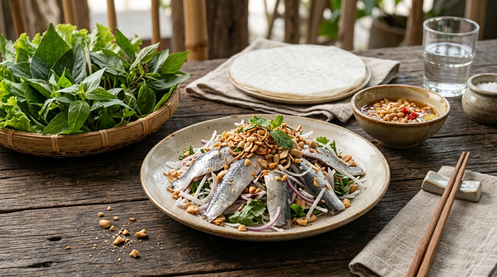
🐟 Gỏi cá trích Phú Quốc
Đặc sản đệ nhất xứ đảo! Những lát cá trích tươi vừa gỡ lưới lóc bỏ xương, bóp tái cùng chanh ớt, trộn dừa nạo béo bùi, cuốn bánh tráng rau rừng và chấm nước mắm me đậu phộng đậm đà ngây ngất.
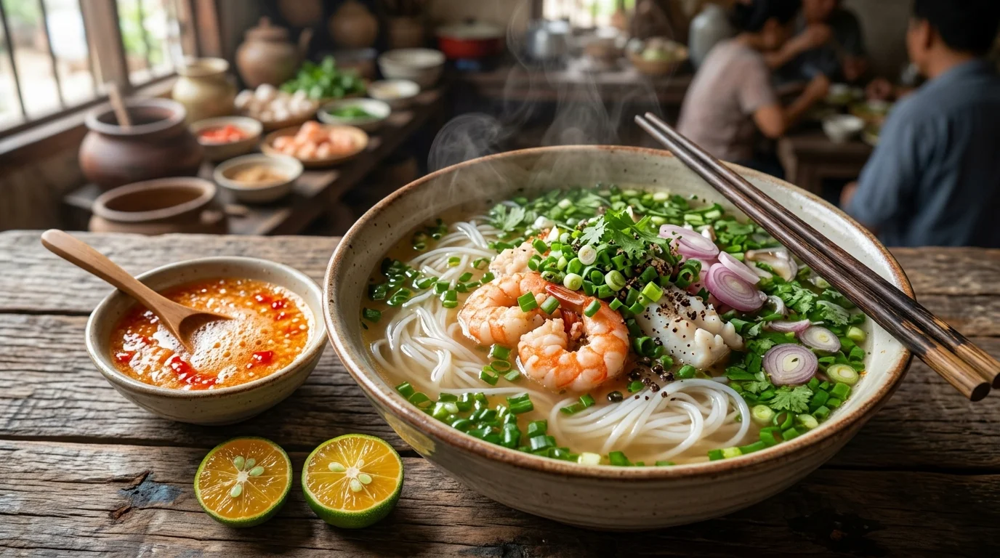
🍜 Bún quậy Kiến Xây
Trải nghiệm ẩm thực độc đáo khi sợi bún được ép tươi tại chỗ, chả tôm cá quết sống dán quanh thành tô chan nước lèo nóng hổi làm chín tái, ăn kèm chén muối ớt tắc tự pha theo khẩu vị riêng.
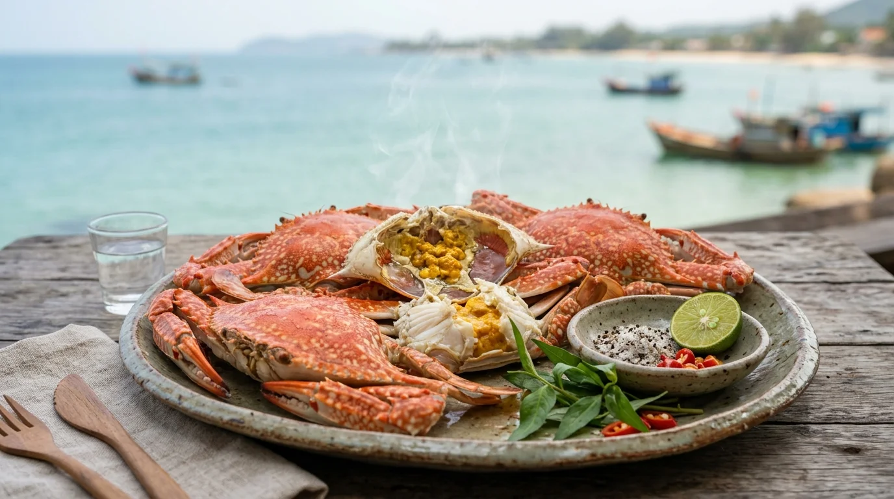
🦀 Ghẹ Hàm Ninh hấp
Ghẹ Hàm Ninh kích thước vừa phải nhưng thịt chắc nịch, ngọt đậm đà tự nhiên và gạch béo ngậy. Ghẹ tươi luộc sả chấm đĩa muối tiêu chanh hạt tiêu Phú Quốc cay nồng là chuẩn vị đảo ngọc.
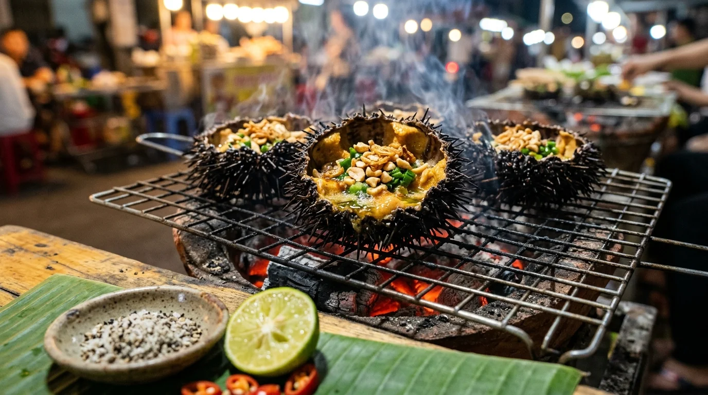
🦔 Nhum biển nướng mỡ hành
Được ví như "nhân sâm của biển", nhum bổ đôi nướng trên than hồng thơm nức mũi, thêm thìa mỡ hành xèo xèo và đậu phộng giòn rụm, xúc từng thìa trứng nhum béo ngậy tan ngay đầu lưỡi.
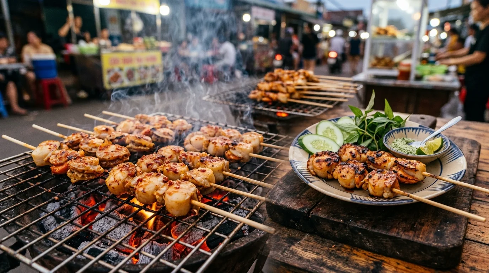
🍢 Còi biên mai nướng muối ớt
Biên mai là loài sò biển hình tam giác cắm sâu dưới đáy cát. Phần còi tròn bằng đồng xu dày thịt, ướp muối hạt to và ớt đỏ cay xé nướng than hoa vừa chín tới dai ngọt giòn sần sật.
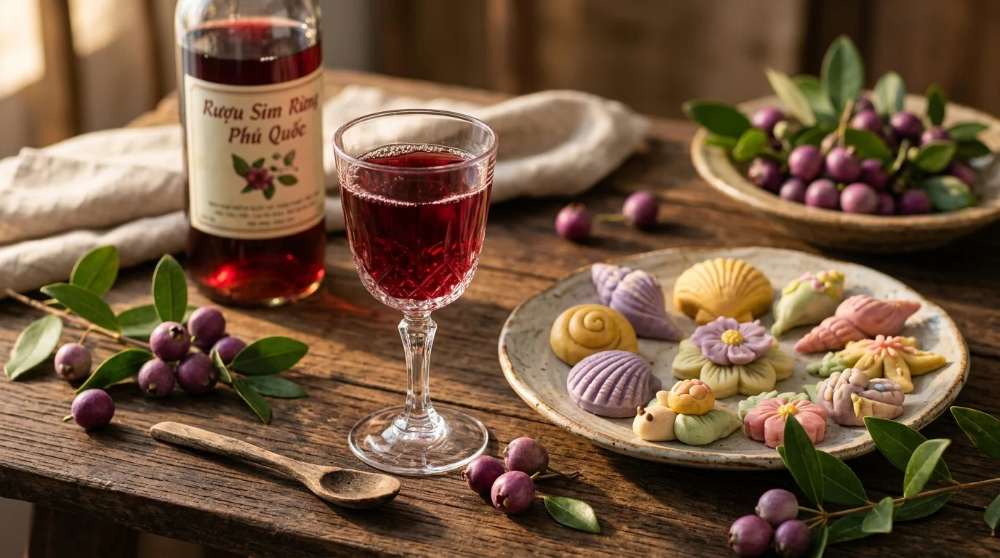
🍷 Rượu sim rừng & Bánh khéo
Rượu sim mật lên men tự nhiên từ trái sim rừng tím thẫm có vị ngọt chát thanh tao tốt cho tiêu hóa, kết hợp cùng những chiếc bánh khéo nhỏ nhắn tạo hình vỏ sò nhân dừa đậu xanh nức tiếng.
💰 8. Bảng Giá Vé Tham Quan & Dịch Vụ Du Lịch Niêm Yết
Dưới đây là bảng giá vé tham khảo các điểm du lịch tiêu biểu tại TP. Phú Quốc:
| Điểm đến / Dịch vụ trải nghiệm | Mức giá tham khảo | Ghi chú & Chính sách vé |
|---|---|---|
| Vé Cáp treo Hòn Thơm khứ hồi (kèm công viên nước Aquatopia) | 650.000 – 700.000 VNĐ / người lớn | Trẻ em (1m – 1m4): 500.000 VNĐ; Dưới 1m miễn phí |
| Tour Cano 4 đảo (Hòn Móng Tay, Gầm Ghì, Mây Rút, cáp treo) | 850.000 – 1.100.000 VNĐ / khách | Bao gồm cano SB, ăn trưa hải sản 8 món, chụp ảnh sup flycam |
| Vé vào cổng Sunset Sanato Beach Club | 100.000 VNĐ / người lớn | Bao gồm vé chụp ảnh các tác phẩm nghệ thuật bên bờ biển |
| Vé tham quan Suối Tranh (Vườn quốc gia) | 30.000 VNĐ / người | Bao gồm bảo hiểm tham quan rừng và suối |
| Di tích Lịch sử Nhà tù Phú Quốc | Miễn phí vào cửa | Thuê hướng dẫn viên thuyết minh: 100.000 – 150.000 VNĐ / đoàn |
| Dinh Cậu, Dinh Bà, Làng chài Rạch Vẹm, Bãi Sao | Miễn phí vào cửa | Chi phí tự túc (thuê ghế dù bãi biển khoảng 50.000 – 100.000 VNĐ) |
| Nhà thùng Nước mắm Khải Hoàn / Phụng Hưng | Miễn phí tham quan | Thử nếm nước mắm nhĩ và mua đặc sản làm quà |
* Lưu ý: Bảng giá trên chỉ mang tính chất tham khảo tại thời điểm cập nhật và có thể thay đổi theo từng thời kỳ hoặc chính sách điều chỉnh của Ban quản lý khu du lịch.
🧭 9. Gợi Ý Lịch Trình Khám Phá Phú Quốc 4N3Đ & Mẹo Trải Nghiệm An Toàn
🗓️ Ngày 1: Đón ráng chiều Dinh Cậu - Bãi Trường & Phố đêm Dương Đông
Đáp chuyến bay đến sân bay Phú Quốc (PQC), nhận phòng khách sạn tại Dương Đông. Chiều ghé thăm Dinh Cậu và Dinh Bà Thủy Long Thánh Mẫu, sau đó ghé OCSEN Beach Bar hoặc Sunset Sanato ngắm hoàng hôn ngũ sắc rực rỡ. Tối thưởng thức bún quậy Kiến Xây trứ danh và dạo chợ đêm Dương Đông mua quà đặc sản bánh khéo, tiêu chín.
🗓️ Ngày 2: Tour Cano 4 đảo Nam đảo - Cáp treo Hòn Thơm - Bãi Sao & Bãi Khem
Khởi hành xuống cảng An Thới, lên cano lướt sóng khám phá 4 hòn đảo thiên đường: Hòn Mây Rút Trong, Mây Rút Ngoài, Hòn Móng Tay và lặn ngắm san hô tại Hòn Gầm Ghì. Trải nghiệm cáp treo 3 dây vượt biển dài nhất thế giới sang Hòn Thơm vui chơi tại công viên nước Aquatopia. Buổi chiều thư giãn tắm biển tại Bãi Sao và Bãi Khem cát trắng mịn như bột.
🗓️ Ngày 3: Bắc đảo hoang sơ - Vương quốc sao biển Rạch Vẹm - Vườn tiêu & Rừng Quốc gia
Đi xe lên Bắc đảo, dạo bước trên cầu gỗ mộc mạc ngắm đàn sao biển đỏ rực rỡ dưới làn nước trong vắt tại làng chài Rạch Vẹm. Thưởng thức hải sản tươi sống trên nhà bè nổi. Buổi chiều trekking nhẹ Vườn Quốc gia Phú Quốc và Suối Tranh, tham quan vườn tiêu Suối Đá và cơ sở sản xuất rượu sim rừng truyền thống.
🗓️ Ngày 4: Bình minh Làng chài Cổ Hàm Ninh - Di tích Nhà tù Phú Quốc - Tạm biệt Đảo Ngọc
Dậy sớm đón bình minh tuyệt đẹp trên cầu cảng Hàm Ninh, thưởng thức ghẹ luộc tươi ngọt nức tiếng. Thăm Di tích Lịch sử Quốc gia Đặc biệt Nhà tù Phú Quốc (Nhà tù Cây Dừa) để cảm nhận tinh thần quật cường bất khuất của dân tộc. Ghé nhà thùng nước mắm truyền thống Khải Hoàn mua nước mắm 43 độ đạm làm quà trước khi ra sân bay về lại.
⚠️ Bảo vệ sinh thái sao biển Rạch Vẹm: Tuyệt đối KHÔNG nhấc sao biển lên khỏi mặt nước hoặc phơi sao biển lên cát khô để chụp ảnh "sống ảo". Sao biển là loài sinh vật mẫn cảm, việc tiếp xúc không khí trên 10–15 giây sẽ khiến chúng bị ngạt thở và chết hàng loạt. Hãy chụp ảnh sao biển nhẹ nhàng dưới làn nước trong!
⚠️ An toàn tắm biển & Bảo vệ san hô: Khi lặn ngắm san hô (snorkeling), tuyệt đối không giẫm đạp, bẻ cành san hô hoặc đứng lên các rạn san hô sống. Luôn mặc áo phao cứu sinh khi tham gia các hoạt động ca nô trên biển và chú ý cờ báo hiệu dòng chảy xa bờ tại các bãi tắm công cộng.
💡 Thời điểm di chuyển & Chống say sóng: Nếu đi tàu cao tốc từ Rạch Giá/Hà Tiên ra đảo, hãy uống thuốc chống say sóng trước 30 phút. Nếu đi mùa khô từ tháng 10 đến tháng 4, biển êm dịu phẳng lặng hầu như không có cảm giác sóng lắc.
📌 Chọn bãi tắm theo mùa gió: Vào mùa khô (tháng 10 – tháng 4), bờ Tây (Bãi Trường, Dinh Cậu) và bờ Bắc (Rạch Vẹm) sóng êm nhất. Vào mùa hè (tháng 5 – tháng 9), nếu bờ Tây có sóng to, hãy chuyển sang các bãi biển bờ Đông (Bãi Sao, Bãi Khem) nước vẫn trong xanh văn vắt và lặng sóng!